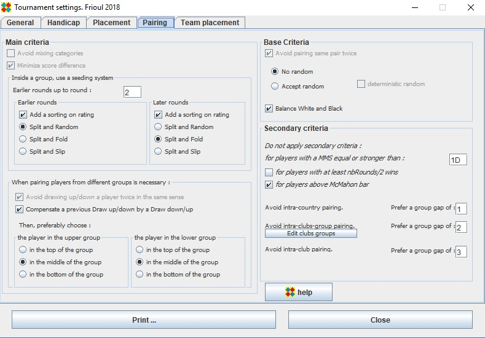

Pairing settings
Pairing settings refer to a subset of pairing criteria as described by the Pairing evaluation function.

Main criteria
A "group" is a set of players with same score for main placement criterion (MMS or NBW).
Avoid mixing categories
Relevant in "Swiss with categories" only. When selected, the pairing will prefer intra-category pairing.
Minimize score difference
Always selected. Pairing prefers to pair players with equal or neighboring main score, MMS or NBW.
Seeding system
Inside a group, players are ordered according to their placement. Each player of the higher half of the group will be paired with a player of the lower half.
"Split and Fold" will prefer pairs on the "1 - n, 2 - n-1, ..." scheme
"Split and Slip" will prefer pairs on the "1 - n/2+1, 2 - n/2+2, ..." scheme
"Split and Random" will make random choice.
You can choose a different system for former rounds and latter rounds.
And, for former rounds, you can add a sorting on rating. This is the recommended mode if you want to avoid a game between two best players in the former rounds.
When pairing players from different groups ...
Difficulties or impossibility to make intra-group pairing (due to uneven size of a group, for instance) may occur.
When this occurs, OpenGotha will choose one player in the group and this player will be paired with a player of a stronger or weaker group.
OpenGotha will try to do not draw-up or draw-down a player twice in the same direction.
It will also try to compensate a previous draw-up by a draw-down and vice versa. However, you may inhibit this compensation system by unchecking the "Compensate a previous Draw up/down by a Draw down/up" checkbox.
It will also prefer to chose drawn-up and drawn-down players according to your choice, in the top, middle or bottom of the group.
Base criteria
Avoid pairing same pair twice
Always selected
Random
OpenGotha can introduce randomness as part of the pairing process. If you choose to accept random, you will have to choose between :
- Deterministic random. Two successive pairings will give exactly the same pairing
- Non-Deterministic random. Two successive pairings may give different pairings
Balance White and Black
Tends to give the same number of games with white and black for a given player.
Secondary criteria
Secondary criteria are "Minimize handicap" criterion and geographical criteria.
Secondary criteria are, by default, applied.
But you can exclude these criteria for some defined players :
- Players above a certain rank
- Players with a good performance in previous games.
For instance, in a 10 rounds tournament, if you select this option, then players having at least 5 wins in their previous games will not be concerned by these secondary criteria.
- Players above the McMahon bar
Minimize handicap
This criterion is already taken in account in McMahon system because intra-group pairing will not lead to handicaps.
It is relevant in Swisscat system.
Details in Pairing evaluation function.
Avoid intra-country, intra-clubs-groups and intra-club pairing
This determines what is acceptable to avoid intra pairing.
For instance, in a McMahon tournament,
if you choose 3 as the group gap, which is the default value for intra-club pairing,
then OpenGotha will prefer to pair a given player with another player coming from another club even if their
MMS difference is up to 3 points rather than to pair him with a player coming from the same club with same MMS value.
Avoid intra-clubs-groups pairing
This criterion is a way to avoid pairing players coming from a given group of clubs.
In certain towns (e.g. Toulouse),
you may have several clubs (31To, 31Pi, 31Ba) and players from these clubs often play together.
Define these clubs groups Edit clubs groups button